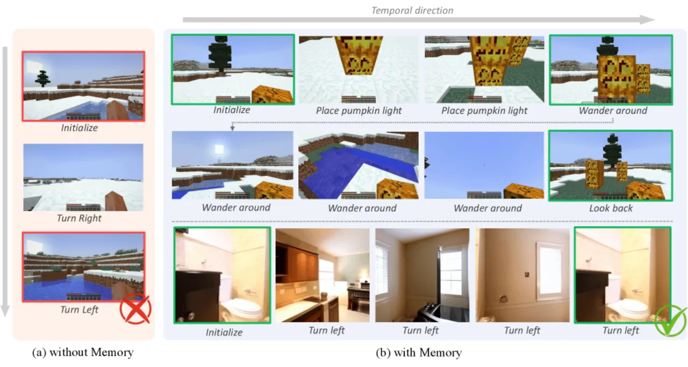
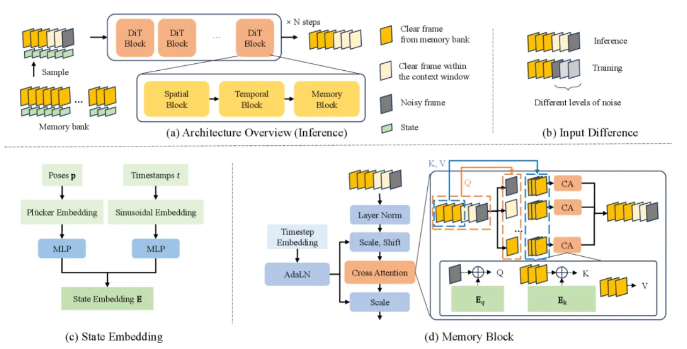
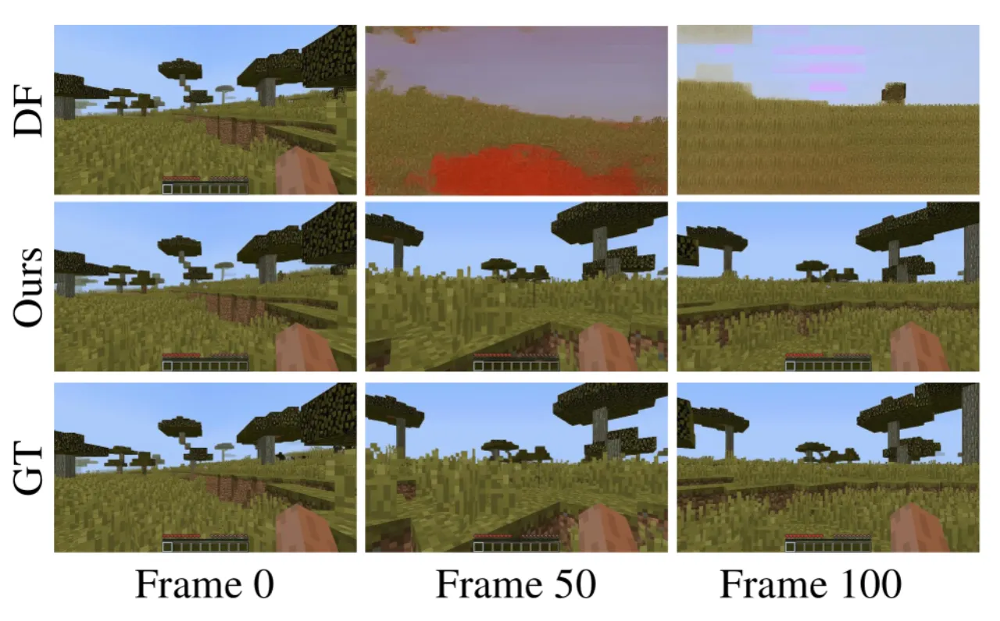
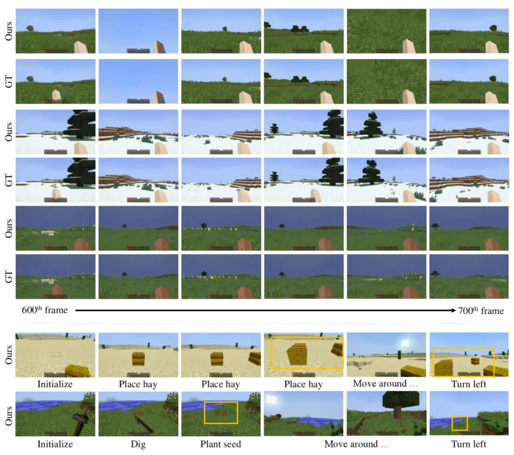
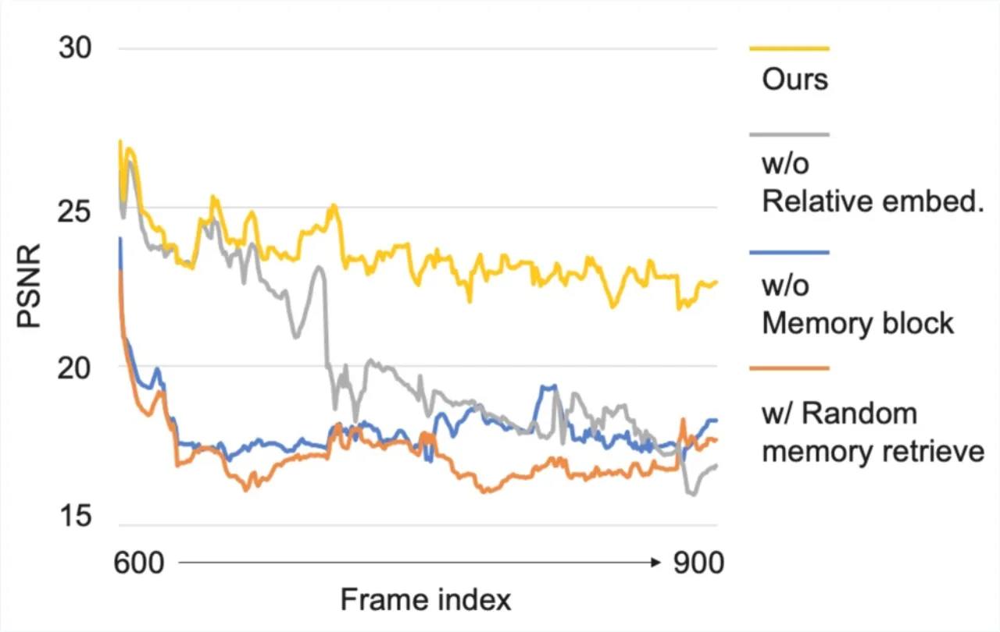

WorldMem 提出一种轻量级记忆库机制，将历史帧的 latent token 连同 5D 姿态与时间戳一起存储，通过基于置信度的空间检索与状态感知 cross-attention，让视频扩散模型在生成长达数百帧的第一人称视角时仍能忠实重建先前观测的场景，从根本上解决上下文窗口外的时空不一致问题。
现有视频扩散模型受固定上下文窗口限制，在生成长序列时不得不丢弃先前帧。当智能体重返已探索区域时，模型无法重现之前的场景，导致严重的视觉不一致。如何在不依赖显式三维重建的前提下实现长程世界一致性，是世界模拟研究的核心挑战。
"Existing approaches either struggle to preserve 3D spatial consistency over time or lack flexibility in modeling dynamic environments."

WorldMem 以 Conditional Diffusion Transformer（CDiT）与 Diffusion Forcing 为基础，在其上引入三个核心组件：记忆库（Memory Bank）、置信度检索（Confidence-based Retrieval）和状态感知记忆注意力（State-aware Memory Attention），共同实现对历史场景的高效感知与忠实重建。

记忆库以元组序列 {(𝐱ᵢᵐ, 𝐩ᵢ, tᵢ)} 的形式保存所有已生成帧的 latent token、5D 相机姿态（x, y, z, pitch, yaw）和时间戳。这种几何无关（geometry-free）表示无需维护显式三维结构，天然支持动态场景。存储 600 帧仅需约 21 MB，检索延迟在 1000 个候选帧时也仅为 0.16 秒。
检索算法综合三项打分维度为每个记忆单元计算置信度：
与单纯视觉 token 注意力不同，WorldMem 将显式时空状态嵌入融入 cross-attention 的 Q/K 计算：
记忆帧使用最低噪声等级 k_min，上下文帧则在 [k_min, k_max] 范围内采样；时序注意力掩码防止记忆单元互相影响，保持因果性。训练时采用渐进式距离采样（Progressive Sampling）：从小范围（2m）逐渐扩展至大范围（8m），使模型学会处理大视角跨度的重访场景，相比固定 8m 采样 PSNR 提升 2.87（21.11 → 23.98）。
在 MineDojo（Minecraft 虚拟环境，含平原/沙漠/热带草原等多样地形）和 RealEstate10K（真实室内场景）两个基准上评估。指标：PSNR（像素保真度）、LPIPS（感知相似度）、rFID（重建真实性）。对比基线：Full Sequence、Diffusion Forcing（DFoT）、CameraCtrl、ViewCrafter。
| 方法 | PSNR ↑ | LPIPS ↓ | rFID ↓ |
|---|---|---|---|
| Diffusion Forcing（基线） | 17.32 | 0.4376 | 51.28 |
| WorldMem（本文） | 23.98 | 0.1429 | 15.37 |
| 方法 | PSNR ↑ | LPIPS ↓ | rFID ↓ |
|---|---|---|---|
| Full Sequence | 20.14 | 0.0691 | 13.87 |
| Diffusion Forcing | 24.11 | 0.0094 | 13.88 |
| WorldMem（本文） | 25.98 | 0.0072 | 13.73 |
| 方法 | PSNR ↑ | LPIPS ↓ | rFID ↓ |
|---|---|---|---|
| CameraCtrl | — | — | — |
| ViewCrafter | — | — | — |
| DFoT（基线） | （较低） | （较高） | （较高） |
| WorldMem（本文） | 23.34 | 0.1672 | 43.14 |
注：论文中 RealEstate10K 基线完整数值请见原文 Table 2；此处引用 WorldMem 最终结果。



| 消融变体 | PSNR ↑ | LPIPS ↓ | rFID ↓ |
|---|---|---|---|
| 随机检索（Random Sampling） | 18.32 | — | 47.35 |
| 置信度过滤（无相似度） | 23.12 | — | 24.33 |
| 稀疏姿态 + 绝对编码 | 20.67 | 0.1989 | — |
| 密集姿态 + 绝对编码 | 23.63 | 0.1830 | — |
| 训练：小范围（2m）采样 | 19.23 | — | — |
| 训练：大范围（8m）采样 | 21.11 | — | — |
| 无时间戳条件 | 23.17 | 0.1989 | — |
| 记忆长度 L_M=16（vs 8） | 23.14 | — | — |
| WorldMem 完整模型 | 23.98 | 0.1429 | 15.37 |
关键结论：相似度过滤对 rFID 改善最显著（24.33 → 15.37）；相对状态编码优于绝对编码（LPIPS −0.040）；渐进式距离采样带来最大 PSNR 增益；最优记忆长度为 8 帧（过长反而因冗余干扰性能）。
当智能体被障碍物遮挡或处于视角盲区时，置信度检索算法无法保证召回所有必要的历史记忆，可能导致局部场景重建失败。
当前实验中的环境交互种类和物理真实感尚有局限，复杂动态场景（如流体、破坏性交互）的建模能力有待提升。
随着生成序列变长，记忆库存储量线性增加，对极长序列（远超本文实验的 600 帧）可能带来显著内存压力。作者指出扩展至真实世界场景及更丰富交互为未来方向。